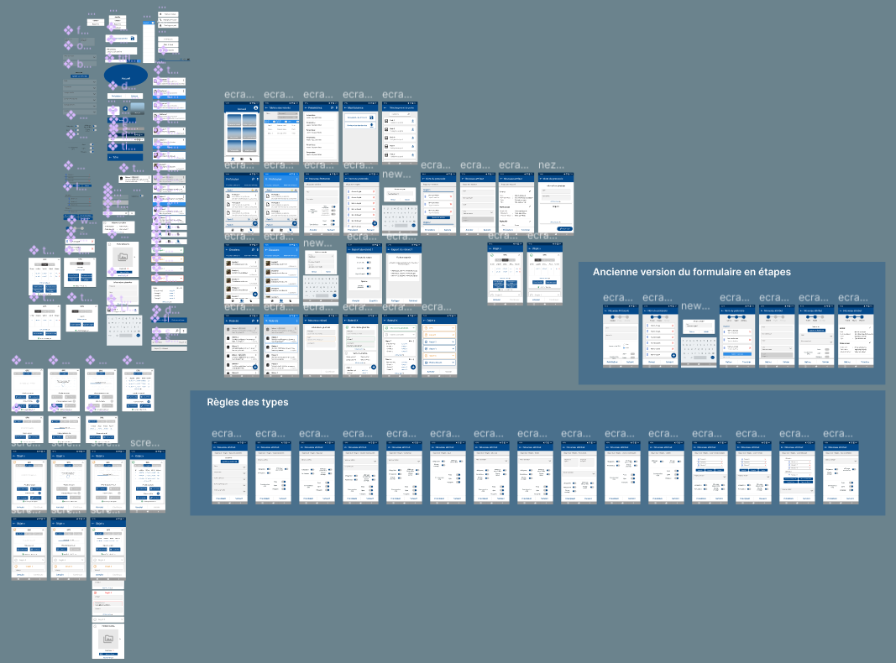

La maquettage, méthode de conception d’interface consistant à réaliser des maquettes fait partie intégrante des spécifications lors de la phase de conception d’un projet. Cette méthode permet de formaliser le besoin du client et de réfléchir au design du logiciel/site en cours de réalisation.
Une représentation graphique est souvent plus parlante que des mots ! J’ai toujours réalisé des maquettes avant de commencer un projet perso ou scolaire. En plus de formaliser le besoin du client, du point de vue développeur les maquettes permettent “d’imaginer” à quoi va ressembler l’application, les enchaînements d’écran, potentiellement appréhender des difficultés de code… En réalisant ces maquettes j’ai acquis un niveau intermédiaire, capable de réaliser des maquettes basiques avec quelques écrans et quelques éléments graphiques.
Pendant mon alternance à l'Office National des Forêts, j'ai pu prendre part à un projet de refonte d'une application mobile. On m'a confié la tâche de réaliser toutes les maquettes de l'application. L'objectif étant entre autres d'améliorer l'expérience utilisateur en la rendant plus intuitive. Pour cela j'ai utilisé l'application Figma, référence dans le domaine du maquettage. Il m'a fallu 3 semaines pour proposer une première version des maquettes de l'application lors d'une réunion de pilotage du projet.
Ces premières réunions de pilotage avec comme support les maquettes de l'application ont permis de converger vers des choix et de réfléchir au futur de l'application en termes de nouvelles fonctionnalités et d'expérience utilisateur. Ce projet m'a permis d'apprendre à réaliser des maquettes professionnelles, avec un grand nombre d'écrans et de composants graphiques en respectant des standards de design. Au bout de 3 réunions, les maquettes ont été validées et le développement a pu démarrer. Voici le résultat final : 
Ce projet m'a permis de passer d'un niveau scolaire à professionnel. Je suis maintenant capable de réaliser des maquettes d'application qui respectent les standards d'UI/UX. J'ai particulièrement apprécié réaliser ces maquettes et me suis découvert un intérêt pour le domaine du UI/UX. J'envisage de participer à des formations pour progresser dans ce domaine.